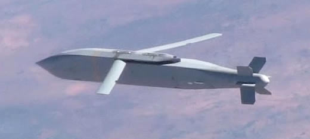
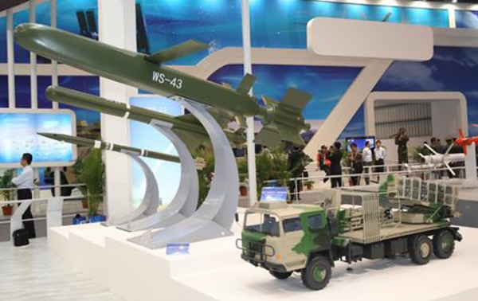

2015-11-01 00:45:00
我的手術與自己原先的預期有些差別；醫生衹做了小規模的切除和Biopsy，所以手術前後身體不適總共只花了一天多的時間。醫生的意思是如果我非要做全部的切除，可以下個月再來，不過現在我正在考慮是否如他的建議再等幾年。總之我的寫稿應該不會再受影響。
言歸正傳，另一個我認爲可能在未來十年内裝備共軍的新武器是超遠程火箭彈。一般的火箭彈如共軍裝備的PHL-03（P炮-H火-L輪，這型12聯裝300mm口徑的卡車載火箭炮是俄製龍捲風火箭炮的仿製版）或美軍M270系統所用的227mm口徑MLRS原本設計射程都在70公里左右，這已超過155mm火炮發射無制導彈藥的40-50公里射程，大約相當於軍（共軍和蘇軍）或師（美軍）級的偵察極限和攻擊縱深。PHL-03因爲口徑和重量（800+kg，相對於MLRS的300kg）較大，後來中共換裝了等同美軍的高性能火箭引擎後，射程達到了150公里，這要從福建沿海攻擊澎湖是綽綽有餘，但是若要打擊臺灣本島的目標就不夠了。
其實紙面上最適合臺海戰役先期火力準備的地對地投射武器，反而是國軍在2010年從美國買了226枚的ATacMS Block IVA袖珍彈道導彈，彈重1.67噸，射程300+公里（很多導彈的公開射程指標都在280-300公里之間，這并不是因爲這樣的射程特別有用，而是受國際條約Missile Technology Control Regime的限制，外銷型射程必須小於300公里，而内銷型的性能往往是保密的；例如共軍的YJ-62最大射程其實是600+公里，但是外銷型衹號稱280公里；ATacMS Block IVA的外銷型射程號稱略小於300公里，實際上應該在350公里左右），在最大射程時的彈頭重230kg，所以有效載荷比是230/1670=14%。這個載荷量是小了點，但是國軍是守勢作戰，打擊的目標不是堅固的堡壘，而是準備登船渡海的野戰部隊，沒有什麽工事防護，所以毀滅力可以用子母彈頭來增强。
共軍用來打擊國軍堅固陣地的地對地投射武器有二炮自行招標開發的DF-15和原本由航天工業部搞來外銷的DF-11兩型。後者較小也便宜些（不過其TEL十分豪華、太過昂貴，也是共軍20年多前選擇以DF-15爲主力的原因之一），適合與火箭炮以及ATacMS來做比較。DF-11A重3.8噸，射程至少有500+公里，彈頭重800公斤，有效載荷比是800/3800=21%。國軍購買ATacMS的單價超過400萬美元一發，DF-11A在近年的價格卻仍然衹有130萬美元，共軍似乎是占了大便宜了。但是DF-11A的精度不高，據稱誤差達到200米（慣性制導；若加上衛星制導，誤差應可壓到50米以下，仍然不足以打擊點目標），衹能攻擊機場之類的大型目標，這也是爲什麽共軍還保留了幾百枚遠較昂貴的DF-15，準備依靠它較佳的精度來對點目標（如國防部）做手術式的精確打擊。
DF-11的精度雖然比不上ATacMS和DF-15，但是相對於衹有簡易制導的火箭彈還是好得多了；它的白菜價更是嚴重壓縮了超遠程火箭彈在共軍序列裏能存活的空間。例如增程後的PHL-03，單價達到12萬美元，彈重840kg，彈頭重230kg，在150公里射程的誤差就與DF-11相當。如果要開發能替代DF-11的火箭彈，它的射程必須至少加倍，精度也就必須加倍（精度=射程/誤差），載荷則必須增加三倍多，而價錢卻不能成長超過十倍，這是非常困難的。中共的航天科技集團七院在20多年前就開發出衛士（WS）系列，2004年展出的WS-2D射程達到了400公里，但是精度比PHL-03還低，載荷也仍然衹有220kg；如果要改進精度到DF-11的水平，就必須改裝同樣的高精度慣性制導部件，這就是WS-3系列。可是彈道飛彈/火箭彈的慣性制導部件占總價格的1/2以上，那麽彈重1.2噸，載荷卻衹有DF-11的30%不到的WS-3型，無論如何也不可能在性價比上與前者競爭。2004年同在珠海航展出現的還有B611型袖珍彈道飛彈，彈重兩噸，射程150公里時載荷也衹有480公斤，所以也和衛士系列一樣衹能嘗試做外銷（後來成功賣給土耳其）。
所以我預期在未來十年可能出現而且取代DF-11的超遠程火箭彈，并不是傳統式的設計，而是一個全新的概念：也就是火箭助推滑翔彈。簡單地說，就是把美軍的聯合戰區外武器（Joint Standoff Weapon，JSOW）稍加放大後加上一個火箭助推器，從而把一個空射的武器改爲陸射的（國軍的雄風三型正是經過了這樣的改裝，參見《台灣沒有航母殺手......也沒有需要》）。這裏的妙處就在於滑翔彈的速度較慢，衹用很便宜的GPS（共軍顯然必須改用北斗）+低階慣性導航就可以達到極高的精度。美軍自用的JSOW單價衹有28萬美元，共軍沒有花費超過20萬美元的道理，再加一個10萬美元左右的助推器，總價在30萬美元左右，載荷卻已達400kg以上，射程也輕易達標。如果需要更大的彈頭，滑翔的物理效率遠高於自由彈道，即使載荷加倍，價格的增加也很有限（主要集中在更大的助推器上），應該衹需40萬美元左右，那麽就能以三倍的性價比來對DF-11做替換。 
滑翔中的JSOW，中共的軍工業已經展示過自家的大號版本。改裝爲陸射後，其所需的發射筒尺寸與WS-2系列相同。
不過我對這個新裝備出現的機率沒有太大的信心。這倒不是因爲上面的分析有什麽問題，而是因爲其作戰任務剛好介於陸軍的戰術級別和二炮的戰略級別之間，算是一個戰役級的武器。DF-11歸二炮管，火箭炮卻是中共陸軍的裝備；要用陸軍的新武器來直接取代或補充另一個軍種的配備，在任何一個國家的軍事官僚體系下都是很困難的。DF-11A在1999年才定型，還剩有很長的壽命，替代它并沒有急迫的需要，所以這項換裝并不是水到渠成的事。 
一年前在珠海航展驚鴻一瞥的WS-43火箭助推滑翔彈，前方是其發射車的模型，與WS-2和WS-3通用。這個助推器太小，看來射程頂多衹有150公里左右，所以不能用來替換DF-11。我年紀大了，記性也跟著差了；雖在去年看過這張照片，昨天寫稿的時候卻完全不記得，或許這個火箭助推滑翔彈的構想就是WS-43在我潛意識中留下的。我其實很高興發現中共已經有了這方面的研究，因爲原本寫這篇文章時，還怕被罵“資敵”（當然那是太高估這個部落格的影響力，也太低估中國軍工業的想象力了）。